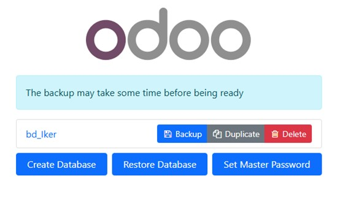
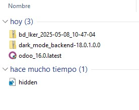

Pasos para realizar un backup en Odoo
Sigue los pasos detallados a continuación para realizar una copia de seguridad de tu base de datos en Odoo:
1. Seleccionar la base de datos
Accede al menú de bases de datos en Odoo, selecciona la base de datos que deseas respaldar y haz clic en "Backup".
2. Guardar el archivo de backup
El archivo de respaldo se guardará automáticamente en la carpeta de descargas de tu equipo. Asegúrate de verificar que el archivo se haya descargado correctamente.
